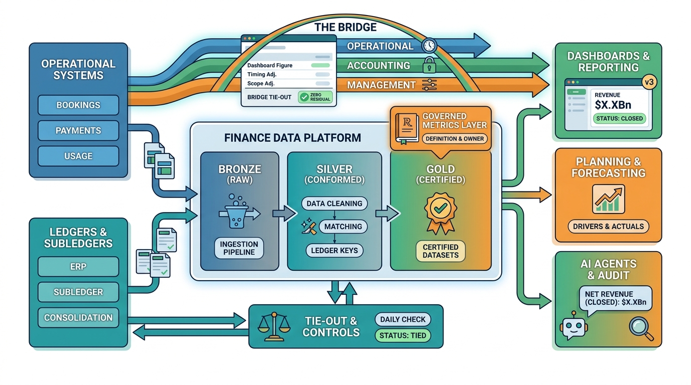

Part III — INTEGRATED: The Finance Estate as One System
Finance Data Across the Estate: From Operations to Analytics

Image generated by Google Gemini (gemini-3-pro-image-preview)
Part III — INTEGRATED: The Finance Estate as One System

Image generated by Google Gemini (gemini-3-pro-image-preview)